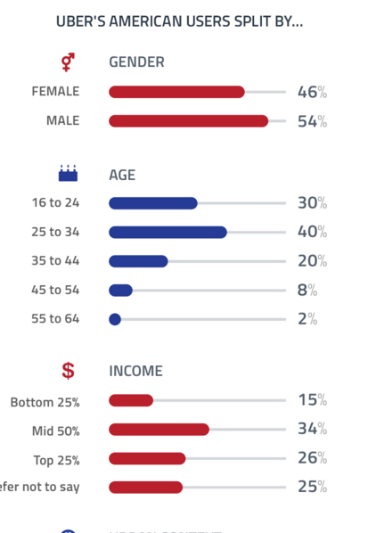
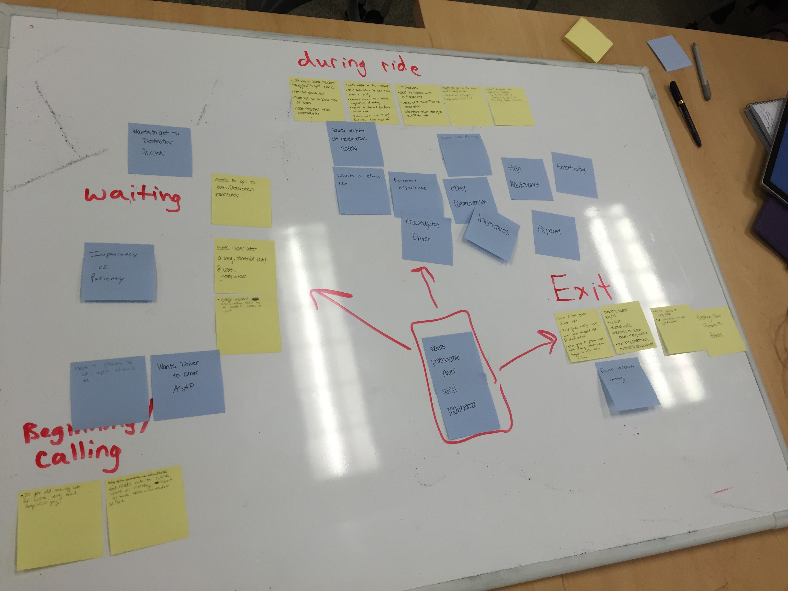
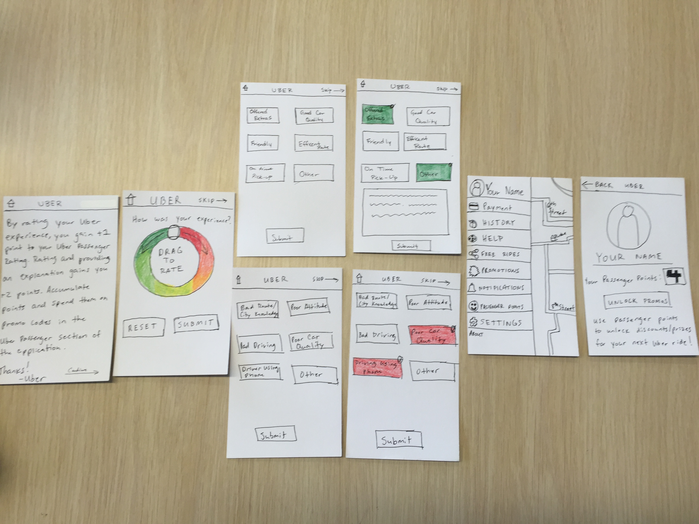

Currently Uber allows their users to rate drivers based on a 5-star scale. The issue with this system is polarity, and the majority of user's choosing extreme highs and lows. This not only causes misleading analytics, but it could also put the Uber driver's job at risk due to a poor rating.
My Role: For this project I was lead designer, which had me leading brainstorming sessions, sketching, prototyping and refining throughout. I also handled documentation and assisted with conducting usability testing.
We first needed to look into the demographics of Uber users. With that, we looked into Uber's process of handling their driver's ratings that would affect their status as an employee. We found that after a rating of 4.6 or lower is placed on the driver, they are put in the "danger zone", which would put their job at risk.
An important factor, if not the most important, is the actual journey the user experiences while using Uber. This journey is where the rating is being drawn from, so we needed to look into the different stages an Uber user would be going through during the process.
Our initial design implemented a trace wheel for rating input. After a few rounds of usability testing and some in-depth research on this approach, we had to scrap it.
We transitioned later to a slide rule format, which you can view in detail in the documentation below.